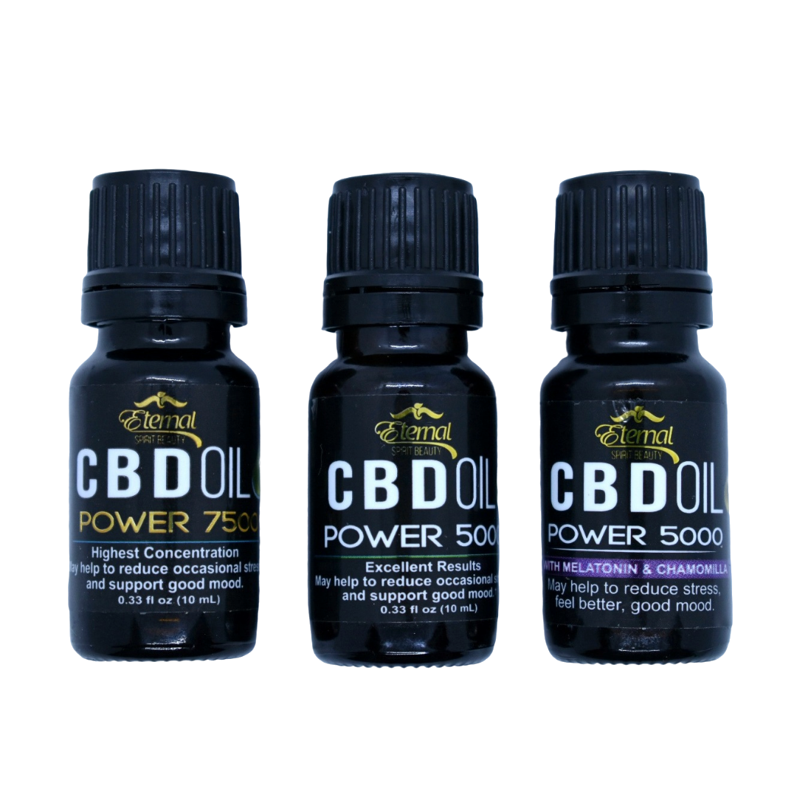

Consultas de Nutrición
La sesión consiste en evaluar tu estado de nutrición a través de distintas medidas como peso, estatura, IMC (índice de masa corporal), circunferencia de cintura, porcentaje de grasa corporal, porcentaje de agua, peso ideal, máximo y mínimo. Se realiza un recordatorio de 24 hrs el cual me ayuda a conocer tus hábitos y la cantidad calórica que ingieres actualmente, para adecuar tu nuevo plan de alimentación a tu estilo de vida, preferencias y enfermedades (en caso de que padezcas alguna).
La sesión consiste en evaluar tu estado de nutrición a través de distintas medidas como peso, estatura, IMC (índice de masa corporal), circunferencia de cintura, porcentaje de grasa corporal, porcentaje de agua, peso ideal, máximo y mínimo. Se realiza un recordatorio de 24 hrs el cual me ayuda a conocer tus hábitos y la cantidad calórica que ingieres actualmente, para adecuar tu nuevo plan de alimentación a tu estilo de vida, preferencias y enfermedades (en caso de que padezcas alguna).>
Alimentarte con consciencia es mucho más fácil de lo que crees, ¡inténtalo, lo disfrutarás!
Atención a:
- Niños, adolescentes y adultos.
- Deportistas.
- Mujeres en embarazo y lactancia.
- Control de grasa corporal / peso (sobrepeso, obesidad y desnutrición).
- Personas que padezcan enfermedades agudas y/o crónicas (diabetes, hipertensión, Colesterol y triglicéridos elevados, enfermedades cardiacas, gastritis, colitis, etc.)
Conferencias & Talleres
Mindful Eating
La finalidad del taller es que los participantes adquieran las bases para alimentarse conscientemente; siendo conscientes del impacto que tiene la alimentación en su calidad de vida, conociendo los múltiples beneficios que ésta aportará a sus vidas; aprenderán a identificar si lo que tienen es hambre física y emocional, y como actuar correctamente ante esos impulsos; obtendrán herramientas para identificar patrones dañinos y falsas creencias relacionadas con la alimentación, lo que les llevará a modificar de raíz sus hábitos y sanar la relación que tienen con los alimentos.
A lo largo del taller se realizan distintos ejercicios prácticos como la elaboración de su propio plan de alimentación; así como dinámicas para conectar con sus sentidos, identificando sabores, olores y texturas de ciertos alimentos; y se plantearán nuevos retos para comenzar a implementar lo aprendido durante el taller.
Mindfullness
Este taller tiene como objetivo que los participantes obtengan herramientas para vivir el presente, experimentar paz, armonía y un despertar de consciencia. Serán conscientes de los beneficios infinitos que esta práctica traerá a su vida en las distintas áreas que conforman al ser humano (mente, cuerpo, espíritu).
Durante el taller se realizan dinámicas de respiración consciente, sonoterapia (con instrumentos que emiten frecuencias vibratorias para facilitar el estado meditativo como tingshas, cuencos tibetanos, ahau drum, koshi, etc.) y meditación guiada (con tema a elegir).
Dirigido a:
- Familias
- Escuelas
- Empresas
- Grupos de 10 personas en adelante
Modalidades:
- Presencial
- En linea
Meditación con Cacao
Es una experiencia bellísima de sanación donde se involucran los aspectos físico, mental, emocional y espiritual, y tiene la finalidad de conectarnos con nuestras emociones para obtener autoconocimiento, despertar nuestra sabiduría interior e ir liberando miedos y falsas creencias.
En esta sesión se utilizan distintas herramientas que facilitan el estado meditativo como la sonoterapia (cuencos tibetanos, healing drum, ahau drum, koshi, tignshalas etc.), meditación guiada y música medicina; todo ello acompañado de una bebida terapéutica de cacao artesanal (42 g).
No es necesario haber meditado antes, esta es una excelente oportunidad para conocer aspectos básicos sobre esta práctica. Lo único que debes hacer durante la sesión es estar abierto a sentir, y a dejarte que tu cuerpo y tu corazón se expresen para continuar tu camino más ligero.
El espacio donde se realiza la sesión, se armoniza con un altar de flores, velas, cuarzos y algunos otros elementos para que los participantes conecten con esa belleza y amor desde el primer momento en el que llegan.
Al finalizar la sesión experimentarás una sensación de paz y claridad mental, sintiéndote en armonía contigo mismo y con todo lo que existe.
¡Vibrarás en la frecuencia del amor puro e incondicional!
Sesiones:
- Individuales
- En pareja
- Grupales privadas o abiertas
Sonoterapia & Reiki
Es una terapia de sanación donde las principales herramientas son la sonoterapia (cuencos tibetanos, healing drum, ahau drum, koshi, tignshalas etc.) y reiki; en esta sesión también se puede aplicar la medicina del rapé. Esta sesión tiene la finalidad de llevarte a une estado de paz, reconectarte con tu espíritu, obtener claridad mental, relajar tu cuerpo, disminuir el estrés y la ansiedad. La técnica de Reiki se enfoca en activar los principales puntos energéticos del cuerpo, ayudado a movilizar la energía estancada. Los cuencos tibetanos también se utilizan sobre el cuerpo para actuar directamente en las zonas que lo requieran, ayudando a disminuir el dolor y la inflamación.
Al finalizar la sesión experimentarás un esto de paz, tendrás mucha más claridad mental, e irá despertando tu sabiduría interior.
Sesiones:
- Privadas
- En pareja
- Grupales
Venta de Superfoods & CBD
Aceite de Hemp (500ml)
- Pensado
- Fuente de ácidos grasos poliinsaturados 3: 1 de Omega-6 a Omega-3.
- Excelente fuente de vitamina E.
Beneficios:
- Ayuda a mantener los niveles de glucosa estables.
- Efecto anticancerígeno, antiséptico y antiinflamatorio.
- Efecto antidepresivo.
- Disminuye colesterol, triglicéridos y la presión arterial.
Recomendado para:
- Niños, adolescentes, adultos y adultos mayores (frágiles).
- Deportistas y sedentarios.
- Mujeres embarazadas o periodo de lactancia.
- Enfermedad hepática.
- Enfermedades crónicas degenerativas como diabetes, hipertensión arterial, cardiopatías.
- Enfermedades agudas como colitis, gastritis, enfermedades respiratorias, alergias, intolerancias.
Corazones de Hemp Orgánicos (454 gr)
- Fuente de ácidos grasos poliinsaturados.
- Proteína vegetal de alto valor biológico (contiene todos los aminoácidos esenciales).
- Fuente de fósforo, magnesio, folato, hierro, manganeso, zinc, vitamina E, vitaminas del complejo B (b1, B2, B3, B6 y B9).
Beneficios:
- Disminuye la inflamación del colon, acelera tránsito intestinal.
- Ayuda a mantener los niveles de glucosa estables.
- Efecto anticancerígeno, antiséptico y antiinflamatorio.
- Disminuye colesterol, triglicéridos y la presión arterial.
Recomendado para:
- Niños, adolescentes, adultos y adultos mayores (frágiles).
- Deportistas y sedentarios.
- Mujeres embarazadas o periodo de lactancia.
- Enfermedades crónicas degenerativas como diabetes, hipertensión arterial, cardiopatías.
- Enfermedades agudas como colitis, gastritis, enfermedades respiratorias, alergias, intolerancias.
Proteína de Hemp (454 gr)
- Fuente de ácidos grasos poliinsaturados (Omega 3 y 6).
- Proteína vegetal de alto valor biológico (contiene todos los aminoácidos esenciales).
- Fuente de fósforo, magnesio, folato, hierro, manganeso, zinc, vitamina E, vitaminas del complejo B (b1, B2, B3, B6 y B9).
Beneficios:
- Disminuye la inflamación del cólon, acelera el tránsito intestinal.
- Ayuda a mantener los niveles de glucosa estables.
- Efecto anticancerígeno, antiséptico y antiinflamatorio.
- Disminuye colesterol, triglicéridos y la presión arterial.
Recomendado para:
- Niños, adolescentes, adultos y adultos mayores (frágiles).
- Deportistas y sedentarios.
- Mujeres embarazadas o periodo de lactancia.
- Enfermedades crónicas degenerativas como diabetes, hipertensión arterial, cardiopatías.
- Enfermedades agudas como colitis, gastritis, enfermedades respiratorias, alergias, intolerancias.

Cacao en polvo (300 gr)
Cacao ceremonial (1 kg)
- Fuente de hierro, magnesio, calcio, fósforo, zinc, potasio, cobre, vitamina E y manganeso.
- Aporte de ácidos grasos poliinsaturados.
- Fuente de antioxidantes.
Beneficios:
- Evita la oxidación celular.
- Actúa como cardioprotector y relajante muscular.
- Efecto antidepresivo, antiséptico, antiiflamatorio y anticancerígeno.
- Disminuye los niveles de glucosa en sangre.
- Disminuye la presión arterial.

Greens Mix (350 gr)
- Fuente de fitonutrientes, probióticos, clorofila, enzimas, vitaminas y minerales.
Beneficios:
- Incrementa la energía y resistencia muscular.
- Evita la oxidación celular.
- Alcaliniza el pH.
- Mejora el tránsito gastrointestinal.

CBD (10 ml: 5,000 mg/dl, 7,500 mg/dl, Melatonina)
El cannabidiol (CBD) es uno de los fitocannabinoides que se encuentran en la planta de cannabis. El CBD contiene múltiples propiedades terapéuticas, las cuales pueden ayudar a aliviar, prevenir o disminuir muchos tipos de enfermedades como diabetes, parkinson, epilepsia, migrañas, alzheimer, artritis, esclerosis, cáncer, entre muchas otras. No contiene componentes psicoactivos.
Propiedades:
- Anticonvulsivas.
- Antidepresivas y/o ansiolíticas.
- Antieméticas (reduce los vómitos y las náuseas).
- Analgésicas y antiinflamatorias.
- Antitumorales y/o anticancerígenas (combate las células tumorales y cancerosas).
- Antipsicóticas.
- Disminuye el insomnio y estimula el apetito.
